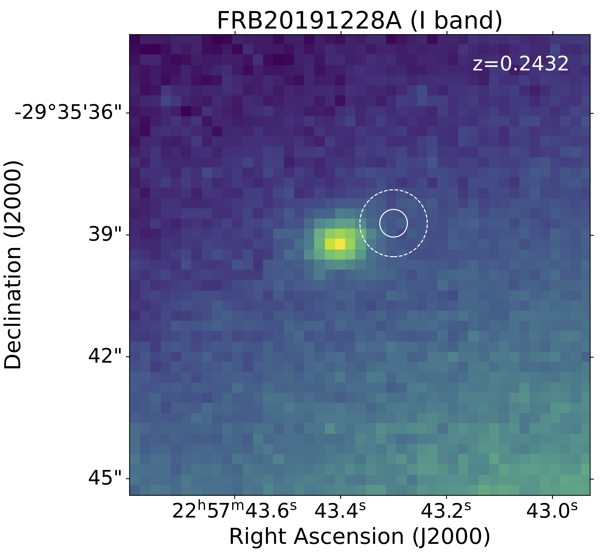

FRB 20191228A
Image from Bhandari et al., 2021 (ArXiv: 2108.01282)
Summary
- Detected by: ASKAP
- FRB coordinates (RA, Dec): 22:57:43.30 -29:35:38.70 (J2000)
- Host coordinates (RA, Dec): 22:57:43.41 -29:35:39.13 (J2000)
- Redshift: 0.2432
- Observed DM: 297.5 ± 0.05 pc cm-3
- Repeating: No
- References: Bhandari et al., 2021 (ArXiv: 2108.01282)
Host galaxy properties
| Quantity | Measured value | Unit |
|---|---|---|
| Stellar mass | (0.54 ± 0.60) × 1010 | M⊙ |
| Star-formation rate | 0.03 ± 0.01 | M⊙/yr |
| Metallicity | 8.48 | 12+log(O/H) |
| Absolute r-band mag. | -18.26 ± 0.05 | mag |
| u - r color (rest-frame) | 2.13 ± 0.74 | mag |
| Half-light radius | 1.78 ± 0.06 | kpc |
| FRB offset from galaxy center | 5.7 ± 3.3 | kpc |
Emission line fluxes
| Emission line | Measured value |
|---|---|
| Hα | 0.30 ± 0.02 |
| Hβ | 0.02 ± 0.01 |
| [OIII] λ 5007 | 0.13 ± 0.03 |
| [NII] λ 6584 | 0.08 ± 0.02 |